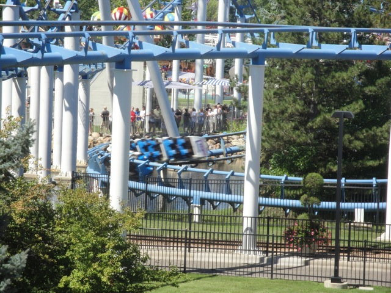
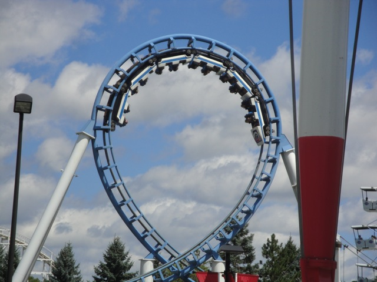
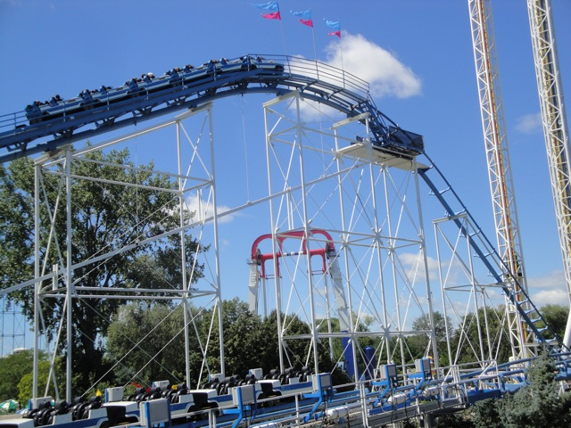

| |
Corkscrew Review

We're here at Valleyfair. Today's ride we'll be reviewing for you is Corkscrew. Once you get in the cars and pull down the OTSRs, you're off. You roll down a dip and around a small turn. You then climb the lifthill. From the lifthill, you get a lovely view of Valleyfair, Power Tower, and the lovely state of Minnesota. Then after climbing the lifthill, you begin to drop. Yep, we're going down the first drop. It's not amazing or anything. But we're having fun. Up next, the vertical loop. Its a fun little vertical loop that provides us with some decent positive Gs. We then head up a small hill before dropping back. There's no airtime here or anything. But hey, a hill is a hill. We then rise up a small bump and quickly go into a small turn. On lots of other Arrow Corkscrew loopers, this transition gives you a good smack. But here, we take it relatively smoothly. And now, we have what makes this ride called Corkscrew. 2 corkscrews going right over the midway. They're relatively fun corkscrews. We then go through another tight turn before dipping straight to the ground as we now head into an upward helix. We get close to the water before we rise up, go through some straight track, and then head straight into the brake run. Corkscrew is not an amazing coaster or anything. But for what it is, its a relatively fun ride that definetly seems to be maintained well and is MUCH better than similar Arrow Loopscrews. If its got a short line, a spin on it wouldn't hurt.
6/10
Location: Valleyfair
Opened: 1980
Built by: Arrow
Last Ridden: August 15, 2010
Corkscrew Photos





Home
|